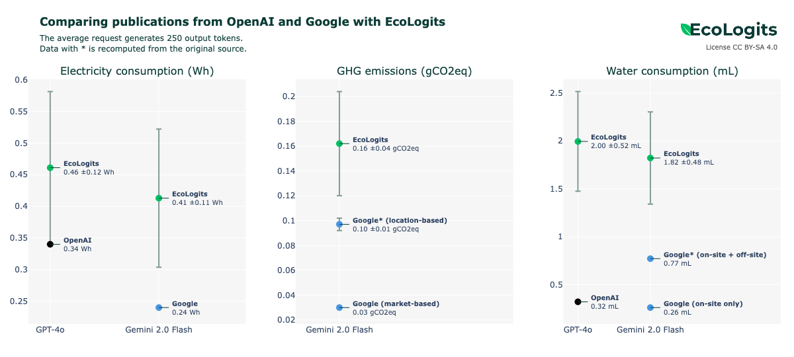

Announcing major improvements in our methodology
We are excited to share significant updates to the methodology embedded in EcoLogits for assessing the environmental footprint of Large Language Models (LLMs). This marks our first major methodological update since launching EcoLogits in early 2024. With these changes, you can expect more accurate energy consumption estimates, as well as new impact criteria related to water consumption and more.
In this blog post, we outline the key methodological changes without going into every detail. We also compare our approach with recent disclosures from Google, Mistral AI, and OpenAI.
What’s new?
New energy benchmark and batching
A major update in this release is the adoption of the ML.ENERGY Leaderboard (Chung et al., 2025) as our energy benchmark, replacing the LLM-Perf Leaderboard from Hugging Face. Developed by researchers at the University of Michigan, this benchmark measures the energy consumption of AI models in production-like environments, aligning closely with our methodology’s focus on API services from AI providers.
This new benchmark introduces several improvements:
- Request batching now accounts for parallel processing, which was previously unaddressed.
- A modern inference engine using vLLM, optimized for inference compared to the PyTorch backend.
- Upgraded GPUs with H100s, which are more efficient than A100s.
The result is a substantial reduction in energy consumption estimates. For example, modeling a query with the Mistral Small 3.2 model generating 400 output tokens now shows a GPU energy estimate of 0.022 Wh, down from 1.43 Wh (a 65x decrease). Now this drop is completely justified by the advances made in terms of energy efficiency that all AI providers are pursuing.
In the following section, we compare EcoLogits with recent disclosures from AI providers, demonstrating how this new benchmark yields more coherent results.
Water consumption footprint
Our approach has always emphasized multicriteria environmental impacts, as environmental concerns extend beyond greenhouse gas emissions. ICT, in particular, has significant impacts related to ecological and human toxicity, as well as resource consumption, for instance. We already support three impact criteria:
- Global Warming Potential (GWP) - also usually called GHG emissions or carbon emissions.
- Abiotic Depletion Potential for Elements (ADPe) - related to mineral and metal consumption.
- Primary Energy (PE) - energy consumption from primary sources like fossil fuels.
In this release, we introduce a new criterion: Water Consumption Footprint. For data centers and electricity generation plants, consumed water refers to water withdrawn from a source and not returned. For example, water evaporated in cooling towers is considered consumed, while water withdrawn from a river and later returned is not. For more explanations, we recommend the Green IO podcast episode #66 featuring Mohammad Islam and Shaolei Ren.
Our implementation is based on the modeling in Li et al., 2025, “Making AI Less ‘Thirsty’”. We account for water consumed both in data centers for cooling and during electricity generation. This relies on the Water Usage Effectiveness (WUE) metric, which quantifies water consumed per unit of electricity. We define an on-site WUE (from provider disclosures) and an off-site WUE (from the World Resources Institute), which aggregates water consumption data by country related to electricity generation.
Currently, this indicator is not computed for server and GPU manufacturing. Meaning that embodied water consumption is not yet available due to limited data, but we aim to include it in future updates.
Provider configuration
EcoLogits’ methodology is designed for customization, allowing for detailed modeling of real-world AI workloads. In this release, we leverage this flexibility to incorporate provider-specific data center configurations. We now offer improved default values for data center geolocation, Power Usage Effectiveness (PUE), and WUE metrics, sourced from disclosures by cloud and AI providers.
Below is an extract of the current values used for API services, which may differ from web services like ChatGPT, Claude, or Le Chat:
| AI Provider | Cloud Provider | Location | PUE | WUE (L/kWh) |
|---|---|---|---|---|
| Anthropic | AWS, Google | USA | 1.09 - 1.14 | 0.13 - 0.99 |
| Cohere | USA | 1.09 | 0.99 | |
| USA | 1.09 | 0.99 | ||
| HuggingFace Hub | AWS, Google | USA | 1.09 - 1.14 | 0.13 - 0.99 |
| Mistral AI | Microsoft | SWE | 1.16 | 0.09 |
| OpenAI | Microsoft | USA | 1.20 | 0.569 |
| Azure OpenAI | Microsoft | USA | 1.20 | 0.569 |
We plan to give EcoLogits users full control over these parameters in the future. For now, we rely on “good defaults” based on available provider data. All sources are documented in the supplemental material.
Other minor changes
New carbon intensity data source
We replaced the ADEME Base Empreinte data source for electricity carbon intensities with a database from Our World in Data. This update provides more recent carbon intensity figures, improving the accuracy of GWP estimates. We continue to use ADEME Base Empreinte for ADPe and PE due to a lack of open, up-to-date alternatives.
Estimation of the number of GPUs
Previously, we estimated the minimum number of GPUs required to host a model based on its size, quantization level, and a 1.2 overhead factor. We now round this value up to the nearest power of two to better reflect real-world deployments, where servers typically use 1, 2, 4, or 8 GPUs. We also updated the default quantization to 16 bits to align with the hardware requirements of our new energy benchmark.
Embodied impacts and hardware lifetime
To align with the ML.ENERGY Leaderboard, we updated the default hardware to H100 GPUs and p5.48xlarge instances. For GWP, we use NVIDIA’s official Product Carbon Footprint for the HGX H100, while relying on Boavizta’s methodology for other server components.
We also reduced the hardware lifetime from 5 to 3 years, reflecting recent reports on the short lifespan of GPUs in AI workloads.
Better latency estimations in EcoLogits Calculator
We improved latency calculations in the EcoLogits Calculator by incorporating model and provider throughput data from OpenRouter. This provides a more accurate estimate of execution duration and, consequently, environmental impacts. Note that this change does not affect the EcoLogits Python library, which relies on direct latency measurements.
Comparison with other disclosures from the AI providers
Over the summer of 2025, Google, Mistral AI, and OpenAI released new environmental impact studies. While these disclosures lack full transparency, they helped validate our methodological direction and confirmed that our previous approach was outdated for these providers.
Comparison with Google and OpenAI
In June and August 2025, OpenAI and Google published data on the environmental impacts of their AI services. Sam Altman, CEO of OpenAI, disclosed the energy and water consumption of an “average ChatGPT request,” though details on methodology were totally missing. Google’s report included energy, water, and GHG emissions for a “median Gemini Apps text prompt.” Both providers reported similar figures: energy consumption of 0.24-0.34 Wh (equivalent to two minutes of an LED light bulb) and water consumption of 0.28-0.32 mL (less than a coffee spoon).
Comparing our methodology to these results is challenging due to limited details. For instance, we lack information on the number of generated tokens per request, the specific model used, or if we have a mix of models and use cases. To facilitate comparison, we assumed an average request generates 250 tokens, aligning with typical response lengths on the LLM Arena [Chiang et al., 2024]. We also considered that the model in the study corresponded to GPT-4o for OpenAI and Gemini 2.0 Flash for Google. We also ignore non-text modalities like image generation, which is also not included in the Google study.

Our updated methodology yields estimates of the same order of magnitude for energy consumption, GHG emissions, and water consumption. Our results are slightly higher, which could stem from two factors: an overestimation of model size and architecture, or the ML.ENERGY benchmark not fully capturing the optimizations providers implement in production.
We estimate model sizes and architectures from leaked data, benchmark results, and pricing information, as detailed on our proprietary models page. We assume GPT-4o and Gemini 2.0 Flash are equivalent to 440B parameters with a Mixture of Experts architecture and 10-30% active parameters. The actual sizes may be smaller.
While the ML.ENERGY benchmark closely mimics production deployments, providers may employ additional optimizations that further reduce energy consumption. Without greater transparency, determining whether our methodology overestimates impacts remains an open question.
However, Google’s publication of intermediate results allowed us to recompute some impacts using a methodology inspired by life cycle assessment studies. By using location-based carbon intensity and including off-site water consumption, we narrowed the gap between our estimates and the published data.
Comparison with Mistral AI
In July 2025, Mistral AI released a Life Cycle Assessment (LCA) study conducted by Carbone 4 and ADEME on their Mistral Large 2 model. The study assessed the environmental impacts of a request generating one page of text (400 output tokens), covering model conception, training, hardware, data center manufacturing, inference, network, and end-user equipment. It focused on three criteria also supported by EcoLogits, reporting marginal impacts of 1.14 gCO2e (GWP), 45 mL (WCF), and 0.16 mgSbeq (ADPe).
While a peer-reviewed LCA is the gold standard for assessing environmental impacts, the lack of transparency in Mistral AI’s study, such as missing hypotheses, scope details, and intermediate results, makes direct comparison impossible. Specifically, we lack data on the share of impacts attributable to the AI inference phase only.
| Mistral AI | EcoLogits (Mistral Large 2 on 400 output tokens) | |
|---|---|---|
| Energy consumption | NA | 0.23 Wh |
| GHG emissions | 1.14 gCO2e | 0.013 gCO2e |
| Water consumption | 45 mL | 1.63 mL |
| Materials consumption | 0.16 mgSbeq | <0.001 mgSbeq |
Call for contributions
This release represents a major step forward in modeling the environmental impacts of generative AI at inference. We have significantly improved energy consumption estimates, aligning closely with provider disclosures, and introduced water consumption as a new impact criterion. Our mission is to maintain and update our tools in line with the latest research. We invite research labs and organizations to contribute openly to advancing the field of green AI.
We still have future improvements to conduct, like accounting for input tokens, which can significantly affect energy consumption, especially in use cases like RAG or coding. For example, Epoch AI reports that increasing input tokens to 10k or 100k can raise energy consumption by 8x or 133x, respectively, compared to a basic prompt. To incorporate this, we need benchmarks focused on energy consumption of the prefill phase at fixed output lengths in production-like environments.
We welcome contributions from research institutes and organizations to explore further impact modeling for generative AI. If you are interested in collaborating to improve the state of the methodology, please reach out.